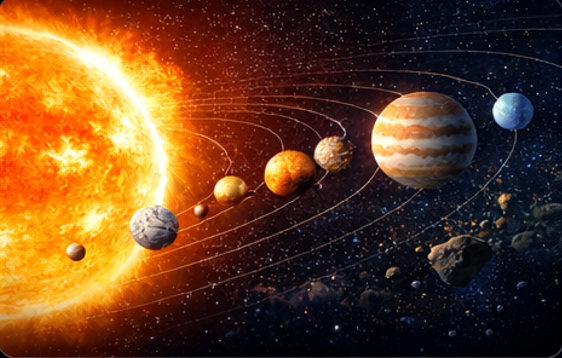

ระบบสุริยะ คือ ระบบดาวที่มีดวงอาทิตย์เป็นศูนย์กลาง และมีวัตถุต่าง ๆ โคจรรอบอยู่ภายใต้แรงโน้มถ่วง เช่น ดาวเคราะห์ 8 ดวง ดวงจันทร์ ดาวเคราะห์แคระ ดาวเคราะห์น้อย ดาวหาง และสะเก็ดดาว ระบบสุริยะเป็นเพียงส่วนเล็ก ๆ ส่วนหนึ่งของกาแล็กซีทางช้างเผือก